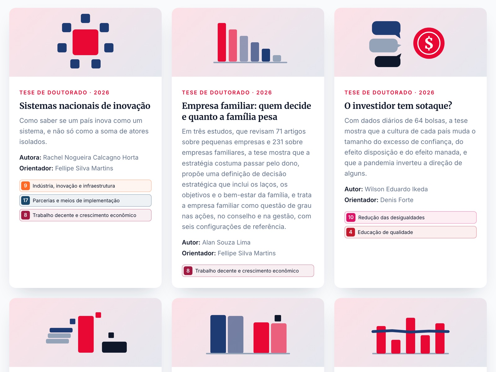

Visit
Explore the research on PPGA Interativo
The project
A thesis takes years to write and is usually read by few people, nearly all of them academics. PPGA Interativo changes that: each doctoral thesis or master's dissertation from the Graduate Program in Business Administration becomes a short, visual presentation in plain language, with infographics that readers explore interactively.
The audience is managers, companies, public agencies, students, the press and society at large. The presentations also serve as case studies in undergraduate and MBA classrooms: each one brings a real problem, the data and what they mean for organizations.
The project is an initiative of the PPGA and the Business School of Mackenzie Presbyterian University, developed by the AI + Strategy Lab. The entire site has an English version, and each work lists the UN Sustainable Development Goals (SDGs) it relates to most.

How the project fits the Lab
The Lab studies what changes in organizations when artificial intelligence takes part in work and decisions. PPGA Interativo is that same phenomenon happening inside the university: an academic process that used to depend on people alone is now done in partnership with AI. That is why the project is both a deliverable and a case the Lab itself observes.
Digital transformation
How an institution adopts generative AI in a real process and scales the result to an entire graduate program.
05Organizational behavior
Collaboration between people and AI: the agent does the heavy lifting, and the researchers decide, review and answer for the result.
03Innovation
A new format of science communication that only became feasible, at this scale, with generative AI.
Among the Lab's activities, the project brings together three lines of action: science communication (taking research beyond the university), teaching support (classroom-ready cases) and tool development (an open method and open code that other programs can reuse).
How it is made
Each presentation comes from a workflow written and reviewed by the team, which an AI agent follows step by step. At two points the work stops and waits for a person's approval.
- Reading
The agent reads the full text of the thesis or dissertation and builds a map of the work: problem, method, data and results.
- Script
The research becomes a sequence of screens, each with a single idea, in plain language. The script must be approved by the coordinator before anything is built.
- Visualizations
For each result, the agent chooses how to show it: layered infographics, 3D models, comparisons and simulators that readers can manipulate.
- Verification
Every number is checked against the original text. Anything that is the team's interpretation or an illustrative scenario is labeled as such on the page.
- English version
The approved presentation gets a full translation, with the same charts.
- Publication
The work goes on the site with a link to the full text in the Mackenzie repository, which remains the reference for citation.
The project started on October 9, 2026. With each work, the lessons learned (language preferences, corrections, new chart types) go back into the workflow, which gets better for the next one. Within a few weeks, the site gathered dozens of theses and dissertations from the program's three research areas. The goal for 2027 is to reach about 350 theses and dissertations, roughly everything the program has published in the last ten years.
Because the process is automated, the presentations may contain inaccuracies; if you find an error, please get in touch.
Innovation stage
PPGA Interativo is already live and in use, with dozens of works published: it is at stage 3. The goal is stage 4, with a proven, repeatable process for the whole program, on the way to the roughly 350 theses and dissertations planned for 2027. As an institutional project with no sales, the market here is the audience that reads and uses the presentations.
- 01Ideation and concept
Problem-solution fit, initial value proposition, first market estimate.
TRL 1–2 · IRL 1–2 - 02Pre-seed and validation
Low-fidelity prototypes, conversations with potential users, competitor analysis.
TRL 3–4 · IRL 3–4 - Today03Seed and MVP
Minimum viable product launched, first users and real pilots.
TRL 5–6 · IRL 5–6 - Target04Early growth
Proven product-market fit, repeatable model, predictable costs.
TRL 7–8 · IRL 7–8 - 05Scale
High-volume operation, optimized channels, geographic expansion.
TRL 9 · IRL 9 - 06Maturity
Established market position, predictable revenue, corporate governance.
Continuous innovation
Classification based on the Unified Concept-to-Market Innovation Taxonomy. TRL is the technology readiness level and IRL, the investment readiness level.